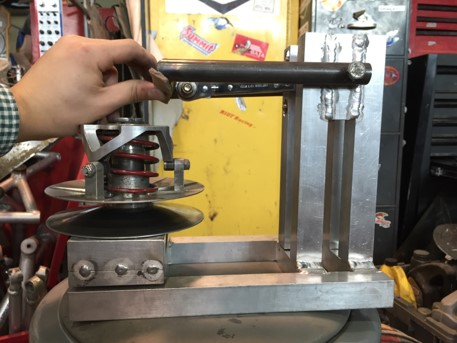
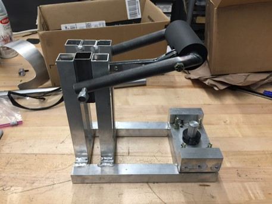
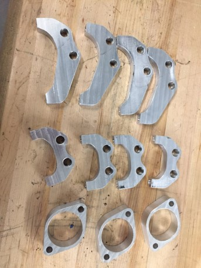

I am a mechanical engineering undergraduate at Cornell University. This is a collection of images of my engineering projects.
Objective: Measure the maximum torque through a driveshaft on a previous season's 2WD car.
| Shear pin hub on driveshaft | Installed on car |
|---|---|
| |
|
I designed, machined, and installed this shear hub which determines the maximum driveshaft torque by destruction of a shear pin. The full assembly consists of a split driveshaft joined by the shear hub, which is locked rotationally by a shear pin. If the torque transferred through this shaft ever exceeds the rated value of the pin, the pin will break, establishing a minimum bound for the maximum torque. Different pins can be placed at different distances from the axis of rotation to allow a range of torques to be tested. Below is a CAD model which shows a cross sectional view of a pin resting in its bore.

Result: I turned the shear hub on a lathe and machined the bores on a CNC mill, ensuring a close fit with the pins. I was able to test the assembly on the car until a pin setting did not break for the given driving conditions. I expect to do further testing with this system.
Objective: Create a tool to facilitate assembly of a CVT pulley
| CVT placed in custom tool | Side view of tool |
|---|---|
|  |  |
I designed and manufactured this tool using aluminum and steel tube stock, and a ratchet wrench. The key design feature is to use the ratchet to allow the user to lock and release a lever arm to compress a spring in the CVT pulley.
Result: The tool didn't quite work as planned, as the coarseness of the ratchet and geometry of the arm prevented it from compressing the spring in the CVT. However, the process of designing and building the tool taught me valuable lessons in designing something to be sturdy, useful, and manufacturable.
Objective: Produce parts needed by the team.
| CVT cam | Brake and steering brackets | Steering rack parts |
|---|---|---|
 |
 |  |
I manufactured these parts on a Tormach PCNC 770 using Fusion 360 CAM.
Objective: Create a piece of kinetic art that responds to the environment
| View of finished project | Internals |
|---|---|
 |
 |
I designed and built an interactive waving cat statue that responds to patting on the head and colored objects by changing its facial expression and waving speed. I used an Arduino to control a servo motor using pulse width modulation, and receive input from a color sensor.
Objective: Analyze surface data for surfaces created by laser powder bed fusion and determine optimal segmentation method selection

I wrote MATLAB code to identify particle boundaries on a surface created by laser powder bed fusion. This image shows the result of one segmentation method compared to a reference classification result. I calculated values of precision and recall for five segmentation methods, which can be used to select and tune relevant parameters. I also implemented surface filtering and calculation of surface parameters based on ASME and ISO standards, such as areal autocovariance and core height.
Result: I presented my work to my peers and NIST researchers in a colloquium at the end of my internship.
Objective: Assist graduate student with laboratory work and study die attach properties

I used ANSYS Workbench to conduct parameter sweeps to determine the effect of void number and size on the thermal resistance and maximum temperature in a die attach layer. I also compared the effect of using shell and solid elements, and conducted a mesh convergence analysis. In the lab, I learned how to use a Linseis XFA Xenonflash Apparatus to take thermal diffusivity measurements.
Objective: Design a sensor suitable for monitoring well bore pressure
| COMSOL result | Plot of parametric study |
|---|---|
 |
 |
I designed a capacitive sensor using membrane deformation and sensitivity equations, for the pressure condition of a well bore environment. I created a process flow and 3D model using L-Edit and MEMS Pro, then used COMSOL to conduct a parametric study to determine more accurate deflection behavior.